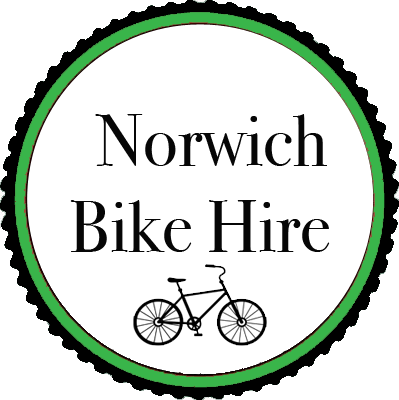

Cycle Routes
A beginner sea route which takes you through hickling were you can stop off at the hickling broad nature reserve for a ride around the broads.
A Medium difficulty route testing even the most advanced cyclists. This route takes you from Norwich through the broads to great yarmouth then finish at hemsby. Remember to drink lots of water on this route your going to need it !
The town crawl ride tests the most advanced riders, testing stamina and endurance. This ride is not reccommended for first time riders and we reccommend using a hybrid bike for this ride as it features different terrain. Come let us know if you completed this route!

Road Safety Tips
1.) Always ride ride on the right were possible except when overtaking and preparing for a left turn
2.) Ride in a straight line being visible to motorists
3.) When riding with or behind other cyclists stay in a single file.
4.) Never ride against traffic as it is illegal and dangerous.
5.) Make sure you obey all traffic signs and signals
6.) Use hand signals were necessary to point directions to other motorists
7.) Follow lane markings, they apply to you too!
8.) Never catch a ride on a car this is very dangerous
9.) Use lights and reflectors to make you visible to other motorists
10.) Watch out for lorries turning, they may not be able to see you!
Check the weather before you go!